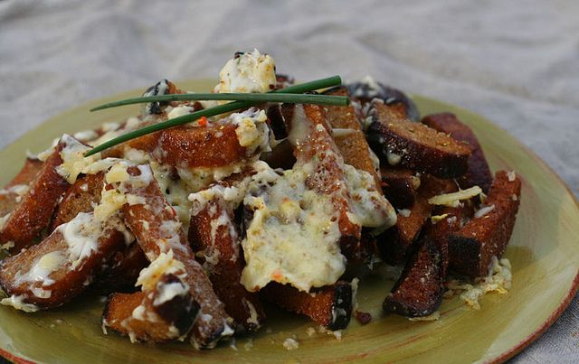

Kepta Duona

Dish Description
If you’re sick of traditional snacks foods and want to mix it up a bit, then you’re seriously going to love this kepta duona recipe. Kepta duona is the Lithuanian name for a snack that is found throughout the Baltic nations of Lithuania, Latvia and Estonia (and even in neighbouring countries like Russia) and it is one of the most prevalent and ubiquitous snack foods found in this lovely European region!
But what is kepta duona? Well, it’s simply fried black bread, usually cut into strips or bite-sized pieces and rubbed with an amble amount of garlic. It’s fried until it’s crispy and then either served as is, with a garlic mayonnaise or even topped with cheese. As simple as it is, there is no denying that this is an incredibly delicious snack.
Ingredients
- 1 loaf black bread
- 1 sprig of garlic
- Frying oil
- Salt
- Mayonnaise
Steps
- Cut the tip off of one garlic clove and rub it over each side of the bread slices.
- Using a serrated knife, cut the bread slices into 5cm-long (2 inch) strips.
- Crush and peel the remaining garlic cloves. Add them to a skillet along with the cold oil. Over medium-high heat, bring the oil up to about 180°C (350°F). Keep and eye on the garlic and remove it from the oil as it begins to brown. Set is aside on a paper towel-lined baking sheet.
- Once oil comes to temperature, add the bread and fry until darkened and crispy, about 5-10 minutes. Remove from the pan using a spider or slotted spoon and let drain on a paper towel-lined baking sheet. Immediately season with salt.
- Allow the bread to cool for about five minutes before serving along with the fried garlic. It's best when served with a side of garlic aioli or mayonnaise!